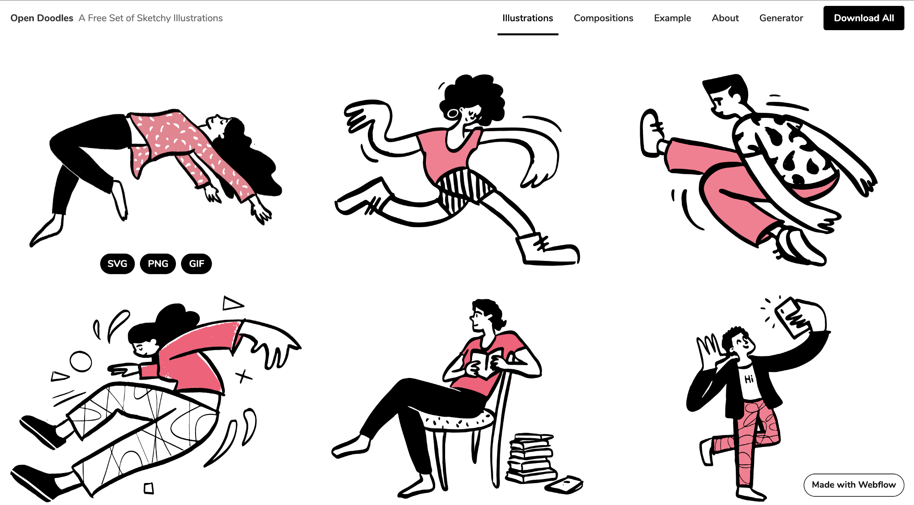
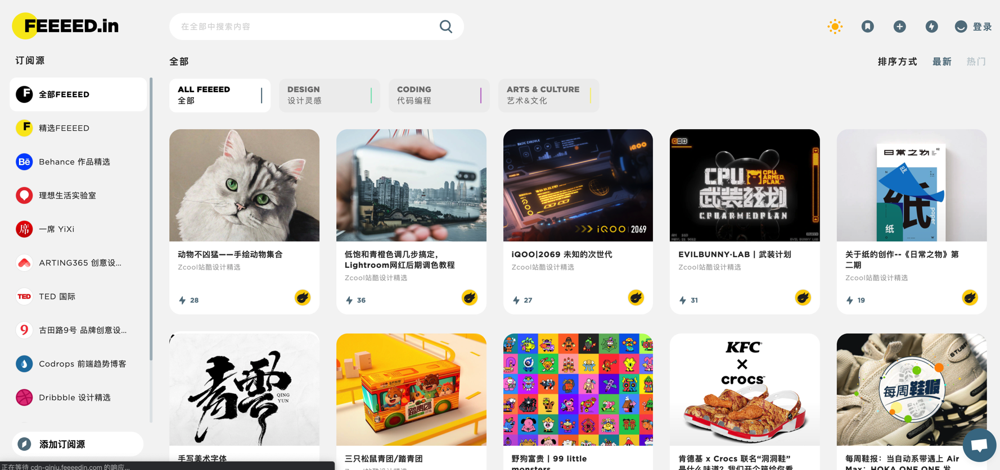
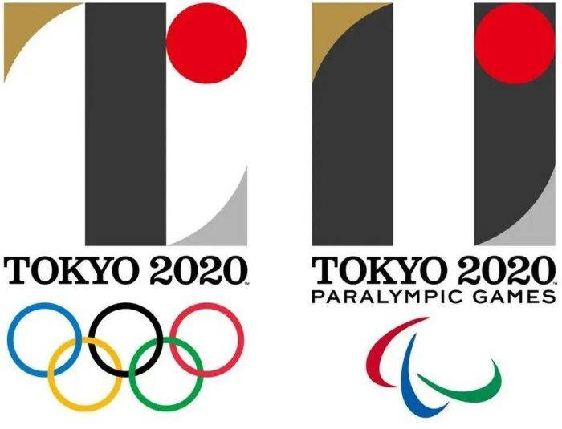
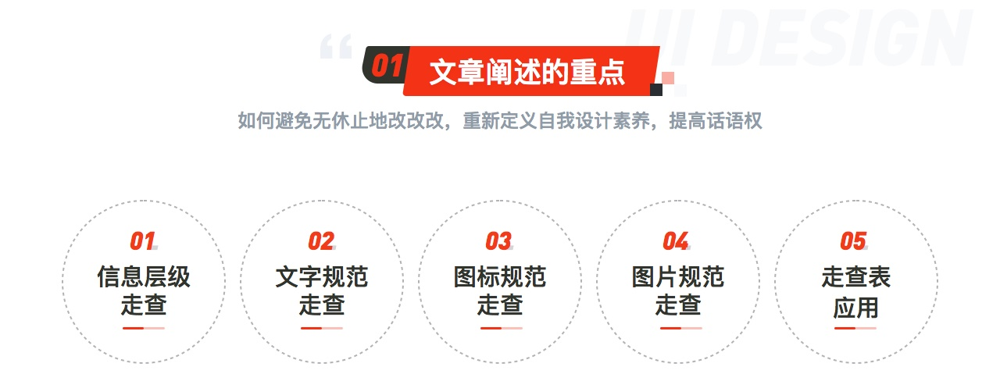
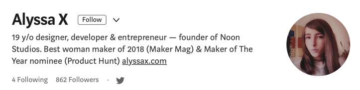

设计周刊 Design Weekly #01
Thu, Apr 2, 2020
🏷 设计资源：

在纽约 InVision 工作的设计师 Pablo Stanley 创建的插画图库，包含很多可爱的 gif，并可供svg, png, gif 格式下载，可以在网站上编辑配色和细节。
🏷 网页推荐：
最近计划做设计周刊，刚好在星球里看到的分享，打开后眼前一亮，区别于平时设计资源导航类网页的单调，右侧的卡片设计一目了然的，有种新鲜感。

🏷 设计新闻：
一波多折的东京奥运会，受疫情影响延期一年，从 Logo 发布时的抄袭事件到前段时间发布动态图标的一致好评，让我们跟着 Canva一起来盘盘吧~

🏷 设计文章
这是一篇有关设计走查的文章，文章定位的侧重点在自查，阐述重点是如何避免无休止地改，重新定义自我设计素养，提高话语权。
我的推荐的理由其实可以根据走查表来进行设计自测和设计评审之后的设计走查，设计评审前的自查可以避免很多尴尬局面，而在开发后的设计走查可以更好地沟通设计文件的落地效果。

🏷 设计工具
Animockup, 一款基于 Web 的动态 Mockup 在线设计工具
Animockup 的出发点是一款易用的开源动态设计工具，这款工具通过上传 Video 在线制作 Mockup，可以进行简单的文字、图片等元素的调整，画布的设计灵感来自 Figma&Sketch。
作者 Alyssa 是一名 19 岁的独立设计开发女性，非常厉害！

🏷 设计名言：